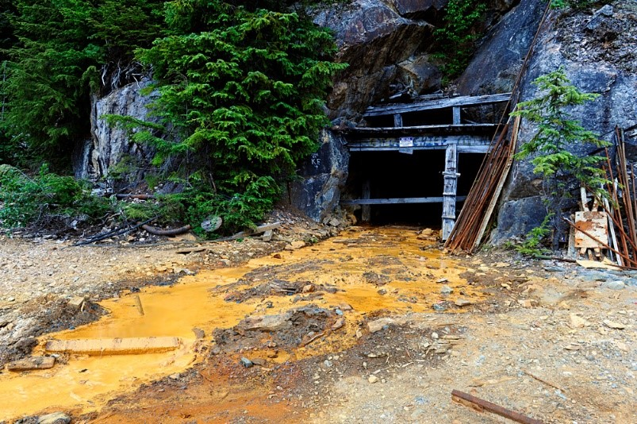

II) L’industrie minière, un développement pas sans conséquence
Bien qu’ayant des apports socio-économiques non négligeables et permettant un rayonnement à l’international du Canada, l’industrie minière ne reste pas pour autant une activité sans conséquence. L’hégémonie de certaines compagnies, les rapports de forces, les conjonctures des marchés, la négligence des normes due à l’isolement des exploitations viennent obscurcir l’image de cette industrie florissante et porteuse d’un avenir socio-économique. L’industrie minière est donc sujette à de nombreux maux qui viennent remettre en question sa place d’activité moteur et nuancer son acceptabilité sociale.
1) L’héritage du free mining
Au cours de son expansion l’industrie minière a connu la mise en place de nombreuses normes afin de l’encadrer, notamment comme la mise en place du code minier qui s’est vu s’enrichir par de nombreuses lois : en faveur de plus de transparence de la part des compagnies, d’une meilleure prise en compte environnementale (évaluation), de la restauration des sites abandonnés, d’une meilleure prise en compte de la santé et de la sécurité des travailleurs et des habitants à proximité où en faveur d’une meilleure gestion des résidus (déchets miniers) … Tout cela encore plus encouragé par les récents accords internationaux en faveur du développement durable.
Mais malgré cela, certaines pratiques
viennent faire contrepoids à toutes ces avancées, c’est le cas du Free Mining qui
se définie comme
« le droit de libre accès à la propriété et à
l’extraction des ressources d’un territoire » (Lapointe 2010), qui est
le principe sur lequel repose les règles d’attribution des droits miniers. Il
consiste donc à permettre à quiconque d’acquérir sous peu de contraintes le
droit de propriété sur les ressources d’un territoire/terrain public ou privé,
mais également d’avoir la garantie de pouvoir explorer ce territoire et
d’exploiter ces ressources en cas de découverte sans craindre une réelle
intervention des autorités. Cette pratique se développa au Canada lors des
différentes ruées vers l’or au cours du XIXe siècle sous l’influence
d’entrepreneurs étasuniens, réels précurseurs dans ce domaine. Cette pratique
fut alors développée dans les territoires par les mineurs, où les cadres
législatifs et les autorités n’étaient encore que peu présents afin de régler
les litiges et de baliser l’activité. Ce qui fut donc le cas dans les régions
canadiennes, qui n’étaient encore à cette époque que des colonies britanniques où
s’appliquait comme seul cadre législatif au secteur minier des instructions
impériales. Le free Mining se
plaçant alors comme une manière rapide de contrôler cette activité minière
grandissante. Puis, malgré l’arrivée des instances gouvernementales dans
ces territoires, le Free mining persista et fut adopté comme l’un des principes
de base du régime minier canadien sous la forte influence des entrepreneurs
miniers. Il était alors possible à tout
le monde d’ouvrir son exploitation moyennant un cout (achat de permis) et le
respect de normes peu contraignantes. De plus, la faible volonté des autorités
de poser un cadre législatif plus dur fut encouragée par les fortes retombées
économiques de ce secteur.
Bien que l’attribution des claims
miniers reste plus contraignante qu’auparavant du fait des nombreux progrès
apportés dans la législation minière, le principe de Free Mining persiste encore
aujourd’hui dans de nombreuses provinces canadiennes comme Québec ou encore en
Colombie britannique. Et l’on devine très vite à la lecture de ces principes,
les problèmes qu’un tel modèle d’attribution des droits miniers procure encore
aujourd’hui.
Souvent décrié comme pratique d’un
autre temps, en contradiction avec les valeurs actuelles de la société, le Free
Mining reste une source d’enjeux pour de nombreux territoires canadiens et
c’est ce que nous allons décrire dans cette partie.
1. a Un cadre législatif encore trop favorisant
Malgré certaines avancées, la
persistance du Free Mining laisse des avantages considérables au secteur minier
dans les provinces canadiennes qui appliquent ce principe. Ce qui vient obstruer
la mise en place de politique d’aménagement du territoire d’intérêt général et
le développement d’autres activités sur ce territoire. Car les gouvernements
qui appliquent ce principe sont dans l’incapacité d’empêcher la mise en place
de toutes activités minières si celles-ci sont en conformité avec la
règlementation, ce qui vient marginaliser tout autre secteur d’activité et
fragilise le rôle des autorités vis-à-vis des entrepreneurs miniers qui se
retrouvent avoir une certaine main mise sur le foncier. Cette incapacité
d’action des gouvernements contre les projets miniers s’explique du fait que la
règlementation est encore trop peu contraignante pour l’acquisition de
concessions minières ce qui laisse peu de marge de manœuvre pour faire
opposition aux compagnies minières. Comme c’est le cas au Québec, au
l’obtention d’un claim minier s’obtient pour une centaine de dollars, sans de
réels contrôles, consentement et consultation des autorités locales ; ce
qui vous donne accès à une surface d’environ 50 hectares. Ce qui est d’autant
plus inquiétant c’est que plus de 80 % du territoire québécois est alors ouvert
à l’acquisition de claims. L’obtention de ces claims laisse donc encore peu
d’obstacle aux compagnies minières, d’autant plus que leur mise en exploitation
est elle aussi peu contraignante notamment en matière environnementale où la
réglementation reste très mince. Pour lancer des travaux d’exploration, il
n’est pas nécessaire d’avoir l’obtention d’une autorisation environnementale,
qui elle n’est nécessaire que pour le site dépassant un certain seuil d’extraction
par exemple 1000 tonnes d’échantillons rocheux … Puis, en ce qui concerne la mise en activité
et l’obtention du bail minier, les démarches sont également anecdotiques, il
suffira alors au détenteur du claim de prouver la présence de gisement sur celui-ci,
puis d’élaborer un plan de réaménagement en vue de la fin de l’activité sur le
site avec une garantie financière qui s’élève à 70 % de l’estimation du prix de
la restauration du site. Mais cette étape est souvent esquivée par les
compagnies minières qui peuvent effectuer le paiement vers les dernières années
d’exploitation. Créant des défauts de paiement liés à l’abandon de la mine, laissant
à la charge de l’état la restauration.
Au
Québec pour l’ensemble des mines abandonnées ce cout s’élèverait à 900 millions
de dollars. Ce contexte législatif très opportun pour l’industrie minière n’est
pas le fait de l’unique cas de la province du Québec, il se répète dans de
nombreuses provinces canadiennes, et contribue à l’émergence de nombreux enjeux
liés à cette activité. Notamment, le fait d’un besoin immédiat de redonner du
pouvoir décisionnaire aux autorités gouvernementales et locales pour leur
permettre d’avoir une main mise sur l’activité de leur territoire, ce qui
passera nécessairement par une réforme des lois minières canadiennes et une
harmonisation de celles-ci à l’échelle des provinces du pays. Cela est d’autant
plus important du fait que les compagnies ont une maitrise du foncier très
importante pouvant jusqu’à aller l’expropriation, mais aussi du fait que
celles-ci jouent de leur position de force face aux collectivités. Car si ces
collectivités et autorités gouvernementales se mettent en travers du chemin de
projets miniers, les compagnies dès lors que l’acquisition du claim est
effectuée dans les règles, sont dans leurs bons droits d’entrainer des
poursuites en justice face à celles-ci, pour obstruction à leurs activités. Ce qui refroidit nombre de
collectivités à se lancer dans une bataille judiciaire de longue durée et
couteuse. De plus, cette position de force permet aux compagnies minières
d’effectuer des actions de rançonnage du foncier auprès des collectivités, en
marchandant leur droit d’accès et d’exploitation ce qui donne lieu à des compensations
onéreuses de la part des collectivités et de l’état dès lors qu’un projet
d’aménagement ou de protection de l’environnement comprend un claim. Ainsi le
gouvernement de Colombie-Britannique dans les années 90 a été obligé de verser
140 millions de dollars à la compagnie Royal Oak afin qu’elle déplace son
projet minier de la mine Cindy Craggy.
Les rapports de force liés au free
Mining exposent très clairement les enjeux auxquels les territoires canadiens
sont sujet, où les conflits d’intérêt entre les compagnies, les collectivités,
les citoyens et les communautés autochtones sont monnaie courante. Le
durcissement des droits d’attribution minier est alors un des enjeux de taille
pour les territoires canadiens afin de faire face à l’hégémonie des compagnies
minières et mettre fin à cet anachronisme qu’est le Free Mining. Ce Free mining
est défendu bec et ongle par les
compagnies et leurs partisans qui affirme qu’il est le seul moyen de maintenir
le bon fonctionnement de l’activité minière en permettant une adaptation au cours
des marchés et un développement local facile, rapide et peu couteux. Ce qui
n’est pas pour autant faux. Ainsi tel est l’enjeu de trouver un bon d’équilibre
afin que toutes les parties trouvent leurs comptes. Cependant, le free mining
reste tout de même un frein non négligeable aux développements d’autres
activités (comme le tourisme) ou encore à l’élaboration de zone protégée, mais
aussi à l’amélioration des cadres des populations. Notamment, amérindienne, qui
se voyant parfois privée de leurs droits ancestraux au profit du droit minier. De plus, son aspect environnemental est également à
décrier, du fait que le free mining ne s'applique plus qu'à de petites
exploitations familiales comme ce fut le cas généralement lors de la ruée vers
l’or, mais bien à des grandes compagnies qui ouvrent des exploitations sur des
centaines d’hectares. Ce qui procure des impacts irréversibles sur l’environnement
même si les restaurations sont aujourd’hui obligatoires. Il n’en reste pas moins que le maintien du free mining ne marche
pas en faveur des compagnies pour ce qui est de l’acceptation sociale de leurs activités. Bien
que suite à de nombreux conflits, il fut d’autant plus balisé juridiquement
dans certaine région canadienne.
1. b Un rapide exemple de conflit liée Free Mining
Comme vu ci-dessus les principes du Free mining sont une source importante de conflits entre les compagnies et les acteurs locaux tels que des communautés ou des collectivités. Nombreux sont les levers de boucliers face à cette activité dans le pays et certaines d’entre elles ont des portées législatives. Comme ce fut le cas dans le Nord de l’Ontario durant l’année 2008, où un conflit d’intérêts éclatât entre la compagnie minière Platinex et la Première nation Kitchenuhmaykoosib Inninuwug (KI). Ce conflit se déroula dans un contexte, où une importante demande mondiale en métaux poussa de nombreuses compagnies à lancer d’importants projets d’exploration et d’acquisition de claims dans le nord de la Province. Ce fut le cas de Platinex qui fit l’acquisition de claims sur les territoires de la communauté KI afin d’y rechercher du platine. La communauté ne tarda pas à s’opposer aux actions d’exploration de Platinex en organisant des blocages de sites. S’en suit une bataille judiciaire durant presque un an entre la communauté et la compagnie, qui déboucha au final par l’indemnisation de la compagnie minière par l’état d’un montant de 5 millions de dollars pour l’abandon de ses droits d’exploitations. Ce conflit amena par la suite à une relecture du droit minier dans la Province de l’Ontario et notamment en matière des droits ancestraux des autochtones. Avec une réforme qui rebalisa le free mining : en bloquant l’acquisition de claim de certains terrains, en donnant la possibilité au propriétaire d’enlever leur terrain à la possible acquisition de claim après une étude démontrant le faible potentiel du terrain et en mettant en place une consultation préalable des populations autochtones obligatoire pour l’obtention des permis. Malgré cela, il n’en reste pas moins que le free mining reste toujours fort dans la province, du fait que le consentement des autorités locales et des communautés à proximité n’est toujours pas requis et que l’élaboration d’une étude environnementale non plus, pour le lancement d’une exploitation. Cet exemple montre très clairement les enjeux auxquels doivent ainsi faire face les provinces canadiennes en matière de droit minier et de conflit sociaux.
2) L’impact environnemental des mines
L’un des autres maux dont l’industrie
minière est sujette au Canada, mais aussi dans le monde est l’impact
environnemental, que celle-ci aurait sur les territoires à proximité de ses
exploitations. Ce mal, dans le cas canadien découle également indirectement du
principe cité ci-dessus, du fait que celui-ci favorise le développement des
exploitations minières dans le pays avec généralement de faibles restrictions
environnementales selon les provinces où celles-ci s’appliquent. Ainsi, comme
toute industrie, le secteur minier s’accompagne de désagréments
environnementaux, et cela tout le long des processus qui le composent. Ces
désagréments/impacts peuvent être variables en fonction du type d’exploitation
(mine artisanale, mine à ciel ouvert …), du type de minerais/métaux exploités
et de la négligence dont vont faire preuve les compagnies. Nous allons donc ici
essayer de détailler les impacts que cette industrie peut causer et de les illustrer
avec quelques exemples par la suite.
Les premières, répercussions environnementales que
l’activité minière génère, apparaissent alors dès la phase de prospection. Car
celle-ci entraine, l’ouverture du milieu par la création de voie d’accès et
l’établissement du camp de prospection, qui va venir perturber la faune et flore
à proximité par les vas et vient liés à l’acheminement du matériel et de la
main d’œuvre. Cependant, ces impacts restent mineurs durant cette phase, même
ceux liés aux excavations de prospection qui sont de simples prélèvements
d’échantillon. Ce n’est qu’à partir de la
phase d’élaboration de travaux de faisabilités que les premiers réels impacts
peuvent avoir lieu. Car les différentes collectes de données
technico-économique peuvent générer différents dommages, comme ceux liés aux
boues de forage qui surviennent durant les sondages du terrain et qui peuvent
amener une pollution des nappes et du milieu, si ceux-ci ne sont pas effectués
correctement. L’autre cause d’impact durant cette élaboration vient également
des essais de traitement, qui consistent à étudier les quantités de composants
chimiques nécessaires pour séparer les métaux ou les minéraux de la roche du
site, ce qui peut entrainer une pollution des écosystèmes à proximité.
Mais les impacts, les plus conséquents
surviennent durant la phase d’exploitation de la mine, car c’est là que l’activité
va réellement prendre pied. Hormis la dégradation paysagère que celle-ci va
entrainer sur plusieurs hectares du fait de ses infrastructures, c’est
l’équilibre environnental qui se trouve totalement perturbé. L’installation
d’une mine s’accompagne généralement d’un déboisement assez conséquent pour
faire place à de grand parc à résidu (zone de stockage des déchets miniers), ce
qui a pour effet d’accentuer le processus d’érosion (augmentation du risque
d’affaissement) et de fragiliser la biodiversité à proximité. Les milieux avoisinants
se trouvent donc stressés, la faune locale est alors obligée de réadapter ses
comportements face à la mine, en plus de la perte de son habitat naturel, ce qui
peut avoir de lourdes conséquences sur les populations d’espèces. Comme c’est le
cas de la mine de Meadowbank dans la province du Nunavut où la construction d’un
tronçon de 100 km de route minière a contribué à une modification des trajets
de migrations des caribous, qui ont adopté un comportement d’évitement
vis-à-vis d’elle. Le fort trafic routier
et aérien que la mine a généré à pousser les troupeaux de Caribou à effectuer
de grands détours, les rendant difficiles d’accès pour les communautés
autochtones, où la chasse est source non négligeable de nourriture. De plus, la
route et la mine ont également entrainé une réduction importante des sources de
nourriture pour de nombreuses espèces (dont le caribou) de par les fortes
retombées de poussières que celles-ci génèrent.
En plus de cela, comme que sur la
phase d’élaboration des travaux de faisabilité, la mine est une source
importante de pollution de l’air, des sols et de l’eau. Les nombreuses machines et véhicules
nécessaires pour le fonctionnent de la mine émettent d’importante émission de
gaz à effet de serre. Même si ces émissions restent mineures face aux secteurs
des transports et l’activité pétrolière et gazifière à l’échelle du pays, il
n’en reste pas moins que celles-ci
polluent. De plus, les nombreuses poussières chargées dans l’air, peuvent
également être une importante source de pollution de l’air de par les intrants chimiques
utilisés, affectant la vie à proximité. L’importante quantité de déchets que
l’industrie minière produit est également une source conséquente de pollution
des sols et des régimes hydrologiques des territoires Canadien. Dans l’ensemble
du pays, l’industrie minière produit 1 650 000 tonnes de stériles
(résidus miniers) par jour soit 650 millions de tonnes de déchets par an qui
sont stockés par la suite dans des parcs à résidus. Ces déchets stockés sont
alors exposés à l’air libre et à l’eau, ce qui entraine des effets d’oxydation produisant
certains acides, nocifs à forte quantité pour les écosystèmes. Ces acides comme
l’acide sulfurique et les métaux sulfurés contenus sur les stérilets sont
ensuite lessivés par les eaux de ruissellement qui peuvent les amener à se
déverser dans les cours d’eau ou les nappes phréatiques, ce qui a pour effet de
dégrader la vie aquatique et de réduire la densité de biomasse à proximité. La
forte teneur en acide et en métaux des sols et des eaux entraine une diminution
drastique de la biodiversité et vient rompre toute la chaine alimentaire d’une
région et cela pour plusieurs décennies. Ce fut le cas de la rivière Tsolum près de
Vancouver, qui vit sa population de saumon diminuée fortement suite à l’exploitation
d’une mine de cuivre dans les années 1960 par la société Mt Washington Copper Mining Co. Cette mine de 13 hectares en
l’espace de 3 ans, de 1963 à 1966, a extrait plus de 360 000 tonnes de
minerais et 940 000 tonnes de stérilets qui ont contribué à l’augmentation
de l’acidité des eaux. À la fermeture de la mine en 1966, la population de coho
dans la rivière était estimée 15 000 individus, en 1987 on en dénombrait
seulement 14 et aujourd’hui il n’y a plus aucune trace de saumon dans le Tsolum.
Ce qui entraina le déclin de la pêche dans la rivière dans les années qui
suivirent et ce qui chiffra les pertes en dizaine de millions de dollars.
L’industrie minière comme toute
industrie est également sujette à des risques industriels pouvant causer de
nombreuses dégradations environnementales (voir accentuer ceux cités ci-dessus).
Ce risque peut être dû notamment à la négligence de certains industriels miniers
qui par l’effet d’isolement de la mine s’accordent certaines souplesses dans
les normes en vigueur concernant les infrastructures. Car les mines sont
généralement situées dans les territoires reculés du Canada à plusieurs
centaines de kilomètres des grandes agglomérations, ce qui fait que les
contrôles sont rares pour la plupart des exploitants. La rupture de la digue du
bassin de décantation de la mine d’or et du cuivre du Mont Polley dans le
district du Cariboo en Colombie-Britannique le 4 aout 2014 illustre parfaitement
l’exemple de cette mauvaise gouvernance causant d’importants dommages. Cette catastrophe a causé l’un des pires
accidents miniers des dernières décennies avec le déversement de presque 25
millions de mètres cubes d’eau et de sable fin contaminé en provenance du
bassin de 4 km². La vague créée par rupture déferla un peu plus en aval
jusqu’au lac de Quesnel polluant ce dernier et par extension le Fleuve Fraser
où le lac se jette. Les eaux furent polluées par de nombreux produits toxiques
tels que le plomb, le cyanure et le cuivre ce qui stoppa la pêche au saumon
rouge qui devait survenir un mois plus tard avec la remontée des poissons. De
nombreuses tribus se virent alors amputées de cette source de revenu en plus du
risque de contamination. Les pertes s’élevèrent en millions de dollars.
Ci-dessous deux
images satellites montrant le chemin de la vague après rupture en le 4 et 5 août
2014.
Site de la mine Mount Polley en Colombie-Britannique avant
la rupture du barrage le 4 août 2014
; Jesse
Allen, en utilisant les données landsat de l’U.S. Geological Survey.
Site de la mine Mount Polley en Colombie-Britannique après
la rupture du barrage le 5 août 2014 ;
Jesse Allen, en utilisant les données
landsat de l’U.S. Geological Survey.
Cette rupture a été causée par une surcharge du bassin de décantation menant à la fragilisation de la digue. Malgré que l’entreprise en charge de la mine : Imperial Metals ait reçu des mises en garde de la part du gouvernement de Colombie-Britannique concernant le niveau de son bassin et le monitorage de la qualité de ses eaux depuis 2009. Presque 5 ans auparavant, l’accident aurait donc pu être évité si l’entreprise avait pris ces dispositions. De plus, un comité d’expert a conclu également que la digue avait été mal conçue en fonction de la nature du terrain. Le cout de la restauration s’est élevé à environ 67 millions de dollars, dont une grande partie au frais de l’entreprise. Malgré cette négligence, l’entreprise ne fut pas condamnée à payer d’amende pour les dommages occasionnés ni à cesser son activité sur le site et reçus l’autorisation des autorités fédérales de construire une usine de traitement des eaux et de déverser temporairement ses eaux traitées dans le lac Quesnel. De plus, les dégâts environnementaux de la catastrophe furent également minimisés par l’entreprise en affirmant que l’eau déversée n’était pas aussi polluée comme certain l'avancait et que les risques pour la santé de l’homme et de la faune étaient minimes. Ces effets furent également minimisés par les autorités qui levèrent 1 semaine après la catastrophe les arrêtés de non-consommation des eaux du lac Quesnel. Ce qui fut décrié par de nombreux spécialistes et les communautés à proximité qui lancèrent une attaque juridique contre l’entreprise et qui prirent la décision de ne pas pêcher les poissons du lac. Le rôle des autorités dans cette affaire fut également montré du doigt, de par la trop grande souplesse des contrôles effectuer à l’égard des industriels du secteur minier. Malgré cela, cette catastrophe a conduit à un durcissement des normes en 2016 en modifiant la Loi sur les mines en Colombie-Britannique avec la mise en place par exemple de pénalités administratives pour les entreprises ne respectant pas les règles et un renforcement des contrôles.
Enfin vient la source de pollution des mines de post-exploitation qui prend sa source généralement par l’abandon du site par les industriels du secteur. La pollution se caractérise de la même manière que durant l’exploitation, mais accentuée dans le temps du fait d’un non-entretien des infrastructures qui laissent déverser les polluants. Cette source de pollution est d’autant plus inquiétante au Canada du fait de son lourd passé minier qui fait que le pays détient un nombre assez conséquent de ces mines. Ainsi, certaines exploitations peuvent déverser des polluants dans la nature pendant plusieurs décennies en attendant une possible restauration. Cette pollution va également fortement dépendre de l’âge des sites et des techniques employés durant l’exploitation. Ainsi ce seront généralement les plus vieux sites qui poseront le plus de problèmes du fait des normes plus laxistes de l’époque. Bien qu'aujourd’hui la restauration des sites à la charge de l’entreprise est obligatoire d’après la loi, il n’en reste pas moins que les provinces canadiennes se retrouvent souvent les héritières de ces sites abandonnés. Ces sites, qui sont soit trop vieux pour retrouver les compagnies exploitantes (qui n’existent plus parfois), soit des sites où l’entreprise est dans l’incapacité de payer les frais de restauration suite à une faillite. De plus, la facture s’élève généralement à des millions de dollars, rendant difficile le déblocage de fonds pour les provinces. Ce qui les obligent à sélectionner au cas par cas les sites à restaurer en fonction de leur degré de pollution. Ce qui laisse une pollution latente émaner des autres sites non restaurés et en attente. La pollution de ces sites est très inquiétante d’autant que la plupart des provinces ne détiennent ou ne tiennent pas d’inventaire complet de ces sites. Sur 5 provinces canadiennes on dénombrerai plus de 10 000 mines abandonnées et il semble bien que cela ne soit que la tête émergée de l’iceberg à l’échelle du pays. Malgré cela une initiative nationale a été lancée afin de connaitre le chiffre approximatif de ces mines abandonnées, en accumulant les bases de données existantes : INMOA (Initiative Nationale pour les Mines Orphelines/abandonnées). Cependant, beaucoup de données manquent à l’appel, ce qui laisse penser que le désastre écologique que les mines font planer sur les territoires Canadien est beaucoup plus sous-estimé que l’on ne le pense. Ci-dessous vous voir la carte interactive de cette initiative.
Un exemple de ces mines abandonnées est celui de la mine de Tulsequah au bord de la rivière Tuka en Colombie-Britannique qui laisse s’échapper un drainage acide depuis sa fermeture en 1957 suite à la faillite de l’entreprise. Malgré une récente tentative de reprise en 2016, la mine resta à l’abandon, continuant de répendre son poison dans les eaux de la rivière Tuka impactant les populations à proximité. L’impact de celle-ci, est encore plus préoccupant du fait que ces eaux polluées descendent la rivière Tuka jusqu’à l’Alaska à 64 km en aval et qui depuis soixantaine d’années multiplie les démarches pour faire agir le gouvernement de Colombie-Britannique concerné sans succès. Aujourd’hui la mine est encore figée à la date de sa fermeture et le problème de pollution perdure, donnant lieu à des discutions houleuses entre les deux états.
Un des puits de l'ancienne mine de Tulsequah où coule encore de l'acide source photo CSM Photos' Blog
Débordement
acide de la mine Tulsequah Chief, à environ 64 km au nord-ouest de la
ville de Juneau,
en Alaska, en septembre 2016. PHOTO(S) : COURTOISIE
: CHRIS MILLER PHOTOGRAPHY
Il va de soi, à la lecture de cette partie, que l’enjeu environnemental auquel les territoires canadiens doivent faire face est de taille. Le questionnement sur l’activité minière doit être au centre des discussions sur l’avenir des territoires dans un contexte de changement climatique où les désastres écologiques devraient être d’autant plus grand qu’ils ne le sont déjà. La fonte du permafrost cumulée à la pollution des mines pourrait bien être le coup d’arrêt de la biodiversité boréale du Canada.
3) Les conséquences sociales de l’exploitation minière
Comme nous avons pu le voir à la
lecture des premières sous-parties de cette seconde partie, les mines procurent
de nombreuses répercussions sociales. D’une part, par le fait que celle-ci se
retrouve généralement comme un moteur de développement d’une ville, ce qui
empêche le développement d’autres activités qui ne sont pas indispensable au
fonctionnement de la mine. Car les villes minières et les populations qui s’y
rattachent vivent généralement que pour la mine, dépendant ainsi de la
volatilité des prix des métaux et des minerais sur les marchés. Il va de soi
que la monoactivité de ces villes accentue les risques de déclin et donc de
chômage pour les communautés vivant autour de la mine. De plus, ces communautés
sont généralement des tribus autochtones qui ont servi de main d’œuvre aux
industriels qui ont développé leurs mines sur leur réserve. Ces communautés
sont généralement peu enclin à quitter leur terre ancestrale en cas de
fermeture, ce qui les laisse dans un contexte de pauvreté latente en attendant
la reprise de l’activité minière. De
plus, à la fermeture de la mine s’est généralement la double peine qui s’abat
sur les communautés locales, du fait qu’elles subissent les impacts
environnementaux d’héritage de l’activité minière. Ce qui vient d’une part
augmenter les risques sur la santé de ces populations, mais aussi entraver leurs
sources de revenu ainsi que leurs traditions comme la chasse et pêche. Les
exemples de la rivière Tsolum ou encore de la mine de Meadowbank illustrent
parfaitement les entraves persistantes des mines. De plus, à la fermeture des
exploitations, les populations se retrouvent également marginalisées du reste
du pays du fait de l’isolement fréquent des villes minières. Cet isolement a
pour effet d’entrainer une baisse de qualité ainsi que la disparition de
certains services publics venant accroitre les inégalités sur les territoires
canadiens. Cela est d’autant plus fort, du fait que certaines villes minières ne sont reliées au reste du pays que par voie
aérienne et ferroviaire et que la fréquence de ces lignes est faible pouvant
ainsi développer un sentiment d’abandon de la part de ces populations.
Cependant, les répercussions sociales
négatives des mines n’apparaissent pas uniquement lors de la fermeture de la
mine menant à l’« abandon » de la ville, mais aussi durant
l’exploitation de celle-ci. L’arrivée d’une mine est source de perturbations
pour les communautés, car celle-ci peut
attiser des tensions au sein d’une même communauté entre les bénéficiaires de
la mine et ceux impactés par celle-ci. Des inégalités peuvent ainsi se creuser
au sein de cette même communauté et romprent la cohésion sociale existante.
L’équilibre des familles peut également être mis à rude épreuve de par les nouvelles perturbations que la mine
peut engendrer sur le rythme familial.
Les tensions peuvent alors être causées par le rythme Fly in fly out que
les mines imposent aux travailleurs causant ainsi la séparation des couples
pendant plusieurs semaines menant l’isolement des mères de famille et attisant
les tensions conjugales. Ce qui ne crée
pas un cadre serein pour l’éducation des enfants. De plus, les conditions de
travail restent difficiles pour les employés avec des rythmes soutenus allant
de 12 heures de travail par jours avec le rythme fly in fly out cumuler, qui causent
des problèmes de stress chez les communautés et augmentent les risques de burn out.
L’augmentation des revenus procurés, provoque également l’addiction aux drogues
et à l’alcool notamment chez les jeunes, source d’échappatoire à l’isolement.
De plus, la mine peut également être une source de conflit entre les différentes
communautés notamment entre communautés autochtones et travailleurs mobiles venant
des autres régions du Canada.
created with
Nicepage .